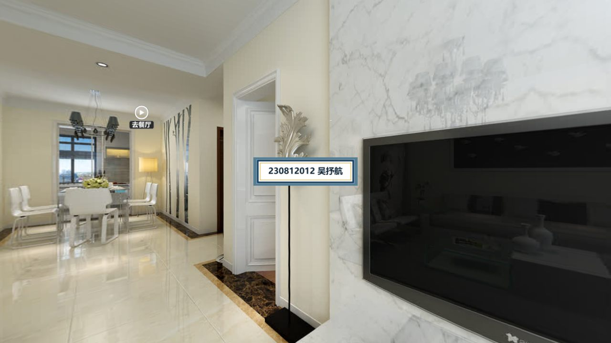
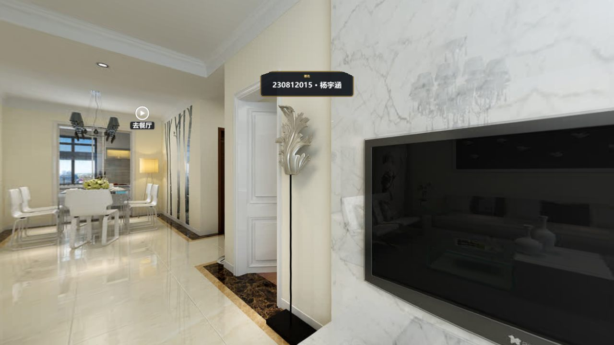
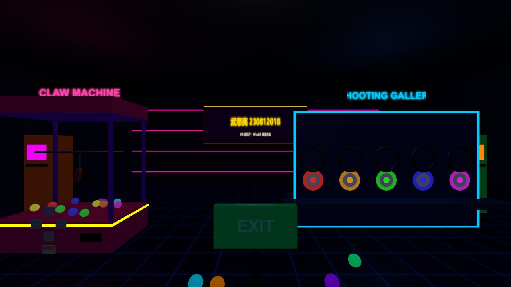
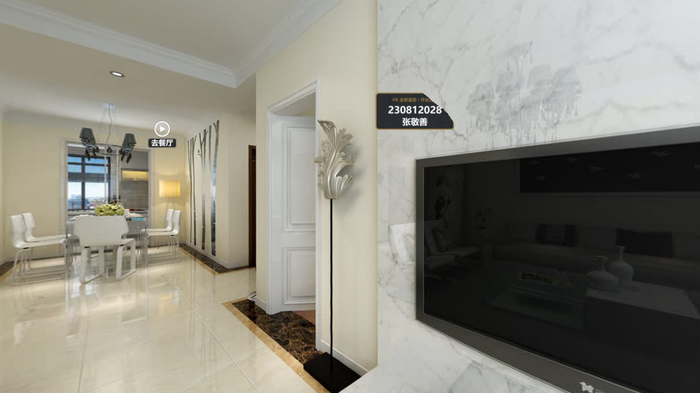
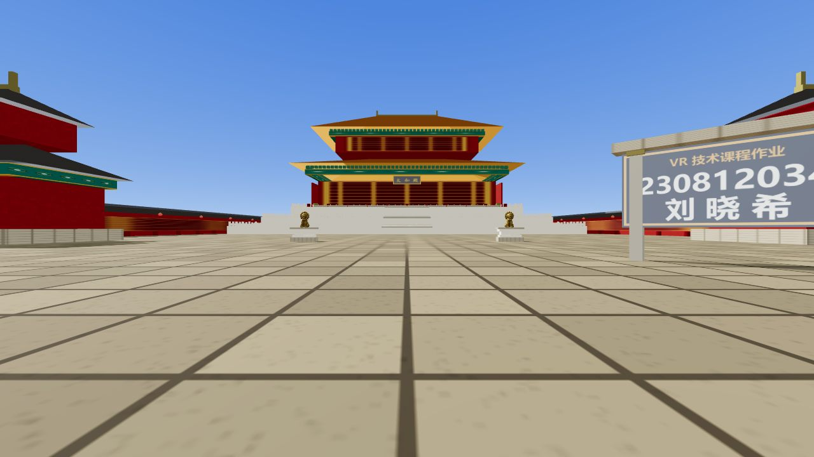
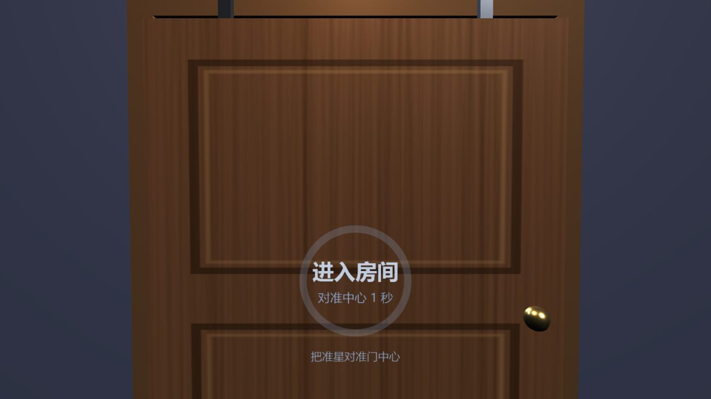
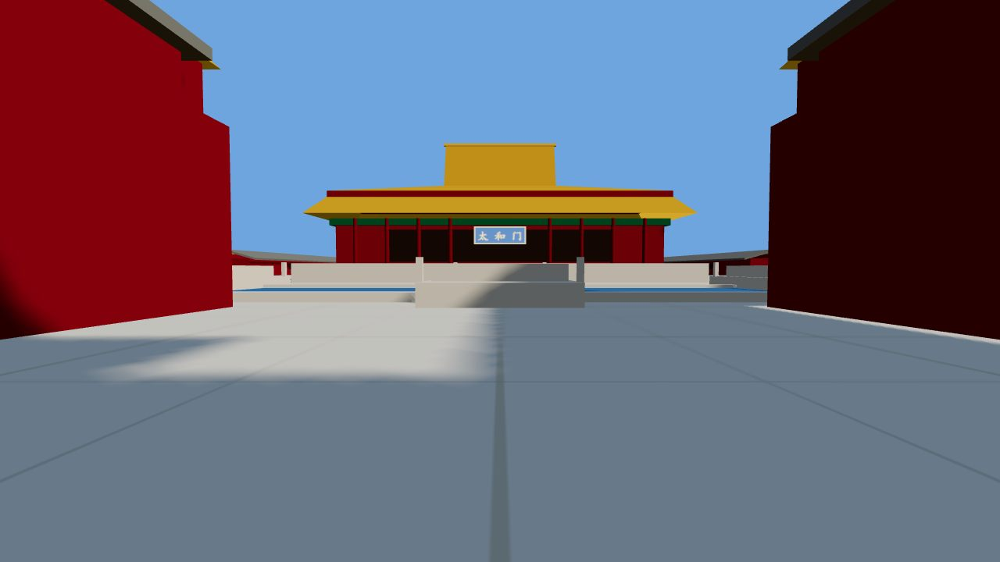
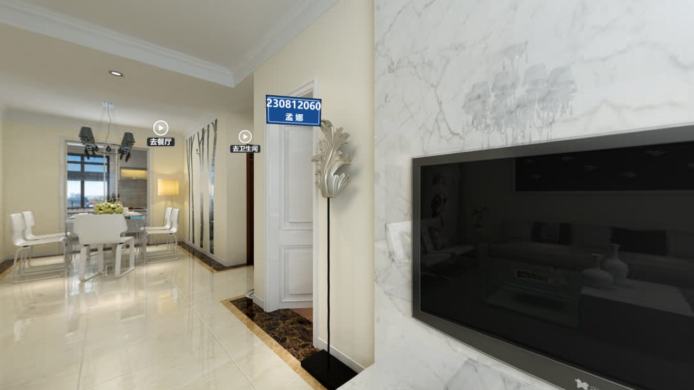

第 5 章《三维全景技术》的课堂作业：自己动手改出一个能在 PICO Neo 3 里打开、场景里带本人姓名的全景漫游作品。
下面每一条都是一份真实交上来的作品，点开就能用——电脑上按住鼠标拖动环视、点房间名跳转；
戴上头显打开时，把视线停在白色圆环上 1.2 秒即可跳转（头显里必须用 https 打开，见「联网自验工作流」）。








作业不是"把课堂演示原样跑一遍"，而是在演示的基础上改成自己的。挑两个例子（下面所有细节都是老师逐行比对学生代码得到的）：
| 改动 | 做了什么 |
|---|---|
| ① 署名铭牌 | 自己用 canvas 画了一块深色圆角底 + 金色描边 + 白色文字的铭牌，做成 Sprite 挂进场景（不是网页上的浮层——沉浸模式里网页浮层不显示，只有 3D 物件才看得见）。第二版又升级成"每个场景都显示"，并且用课上的 u = 0.75 + yaw÷360 算出每个房间初始视角的中心位置去挂它 |
| ② 客厅加一个热点 | 新增"去卫生间"，热点的横向坐标 u = 0.920（先用《热点编辑器》量出方向、再填进配置） |
| ③ 改初始朝向 | 餐厅进门朝向 yaw 由 −90° 改为 −100°，让进门第一眼更接近餐桌方向 |
他把整个 three.js 库内联进了单文件（所以这份作品断网也能跑），并且自己补了两处我们演示里原本没有的保险：
| ② 显式解锁 VR 按钮 | 在支持沉浸模式的设备上主动执行 btn.disabled = false——这正是"网页另存为"会踩到的那个坑，他自己想到并补上了 |
| ③ 不安全上下文的提示 | 检测到 window.isSecureContext 为假时，按钮直接写"进入 VR（需要 HTTPS）"——把"先怀疑环境，再怀疑代码"写进了代码里 |
她的压缩包里多了一个 改动说明.txt，把自己的四处改动逐条写清楚，还附了运行环境说明。
这份说明本身就是很好的示范——"我改了什么、为什么这么改、怎么运行"能写明白，才算真的做完了。
（点这里下载她的改动说明原文。）
| ① 新增姓名牌坊 | 出生点右前方的牌坊：两根立柱 + 金色柱头 + 石顶帽，牌面文字用 canvas 现画，不依赖任何外部图片 |
| ② 新增一对鎏金铜狮 | 立在太和殿前广场中轴两侧，坐狮造型（螺旋鬃毛、璎珞项圈、上扬卷尾），下承四层须弥座 |
| ③ 程序化贴图 | 铜狮用 512×512 现场生成的贴图：底金渐变 + 铜绿锈斑 + 鎏金流痕 + 錾刻卷草纹，另配同款灰度凹凸贴图模拟铸造颗粒感 |
| ④ 改灯光：牌面自发光 | 把 HUD 的「时辰」滑条拖到夜间（20:00 后），名字依旧清晰可读——普通匾额做不到 |
three.min.js 为 Three.js r128，请勿替换为其他版本（换新版会报错白屏）——
这就是"知道自己作品的依赖"；
② 把这份作品做成了 PWA（带 manifest.webmanifest + Service Worker + 图标），
在头显浏览器里可以"安装为应用"、全屏启动、断网也能开——正好把课页里那条"还能装成应用（PWA）离线用"落地了。
../three.min.js），个别作品原本缺这个文件或路径不对，已改好；
② No.3 武思夷与 No.8 汤晓婷的作品原本从 CDN（jsdelivr / unpkg）加载 three.js r160，已改为本目录上方的本地副本（../lib/three-0.160.0/，MIT，含许可原文），断网也能打开；
③ No.2 杨宇涵提交的是浏览器"网页另存为"的副本，其 disabled 状态被固化进 HTML 导致真机上按钮点不动，已解冻；
④ No.4 许思甜与 No.6 刘晓希的作品各自带了自己那一份 three.js（版本与站点共用库不同），为不破坏她们的运行环境，原样保留在各自目录里、一行未动——
刘晓希那份还是可安装的 PWA（含 Service Worker），也必须整目录一起放。